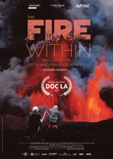

Werner Herzog
2022
81 minutes
This is a film about a couple who were volcanologists who ended up being killed by an eruption. It uses a lot of their cool volcano footage. Storm-chasing sorts of things like this always make you a bit queasy since you always question how many other people their brave antics are putting at risk of being killed. Even in cases where their bravery/foolishness is keeping them in a dangerous area longer than they should be, their mere presence seems like an assurance to others that it's probably safe to stick around just a little bit longer--as long as you're not the last ones to leave.
Your most direct exposure to anything related to an active volcano was the time you traveled to Germany on a work trap and ended up trapped in Europe by the eruption of a volcano in Iceland. Suddenly your path back home across the waters was blocked by an enormous cloud of smoke and ash that was unsafe to fly through, and it wasn't clear to anyone when this fact was going to change. It was absolute chaos.
You ended up being one of the lucky ones. Instead of going straight from Frankfurt back to New York, your employer booked you on a flight two days later from Milan to Rome and then from Rome to New York. You took a train from Mannheim to Milan and then a taxi from Milan to a shabby little town near the airport. You had a minimal layover in Rome which left you sprinting through the airport in a near panic, just barely able to check in at your gate before they gave your flight away to someone on the extensive waiting list, which would have left you stranded for another week or two with no obvious place to stay. You then had the pleasure of boarding a flight which needed to veer around the southern end of a gigantic cloud of ash, literally one of the first flights to make such a journey, and you were informed that they weren't a hundred percent sure if the air quality would be clean enough to keep the engines running cleanly so there was a decent chance the flight might need to turn around or make some sort of emergency landing. It was not a chill flight, and it was about as close to daredevil antics near an active volcano eruption as you wished to go.
You salute the bravery of the couple who got themselves killed for the sake of getting some cool and entertaining up-close shots of lava flows. They died so that you could be entertained for 81 minutes.
Time to choose something different: